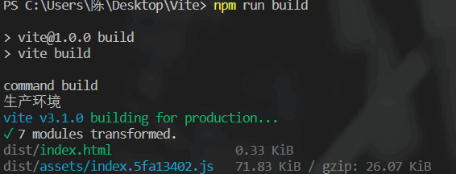
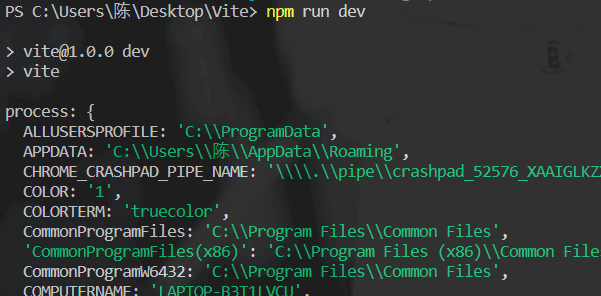
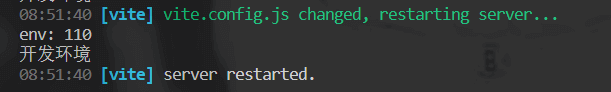
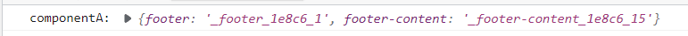
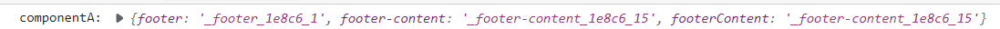
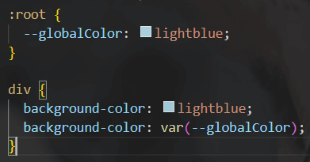
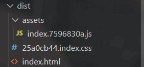

Vite
Vite相较于webpack的优势
引用Vite文档中的一段话来说就是
- 当我们开始构建越来越大型的应用时，需要处理的 JavaScript 代码量也呈指数级增长。包含数千个模块的大型项目相当普遍。我们开始遇到性能瓶颈 —— 使用 JavaScript 开发的工具通常需要很长时间（甚至是几分钟！）才能启动开发服务器，即使使用 HMR，文件修改后的效果也需要几秒钟才能在浏览器中反映出来。如此循环往复，迟钝的反馈会极大地影响开发者的开发效率和幸福感。
项目越大 -> 构建工具要处理的js代码越多 -> 性能变差
理解vite脚手架（create-vite）和vite
在搭建vite项目时需要敲的npm init vite@latest 或 pnpm/yarn create vite是vite脚手架在做事情，而不是vite在做事情
create-vite和vite的关系： create-vite内置了vite
create-vite就相当于vue-cli，而vite就相当于是webpack
vue团队希望’弱化vite的存在感’（不希望你从零配置vite），就是说create-vite已经帮你将vite配置调整到最佳实践。
但是在学习的时候还是需要深入vite
Vite初体验
先来进行模块化导入的测试：
counter.js中导入下载到node_modules的lodash资源
1 | import _ from "lodash"; |
main.js中导入counter.js导出的内容
1 | import { count } from "./counter.js"; |
html中导入main.js
1 | <body> |
此时控制台会报错：只支持绝对路径或相对路径的导入方式，所以lodash无法导入
vite开箱即用：不需要做额外配置就可以使用vite完成构建工作
在默认情况下，esmodule在导入资源时，只支持绝对路径或相对路径
既然node_modules时我们现阶段的最佳实际，为什么es官方不默认帮我导入node_modules中的资源？
假设浏览器做了这个事情，那么从node_modules中导入的资源可能需要导入更多其他的资源，会形成一个资源依赖图，会十分消耗性能
下载vite，配置package.json
1 | npm i vite -D |
启动vite之后，vite就会帮我们完成构建工作
控制台可以导入lodash资源
vite预加载：在处理过程中如果发现非绝对路径和相对路径的导入方式，他会尝试补全路径。查找顺序是从当前目录向上查找，直到查找到根目录或者找到对应依赖为止
Vite依赖预构建
在开发模式中，vite通过预加载的方式使每次重新构建的依赖的相对路径都是正确的
在生产模式中，vite将它全权交给rollup去完成生产模式的打包
由于无法约束依赖的导入模式，有的用esmodules，有的用commonjs等，vite使用了依赖预构建
依赖预构建：vite会找到对应的依赖，然后调用esbuild库，将其他规范的代码转换成esmodule规范，然后放到当前目录下的node_modules/.vite/deps目录下
它解决了三个问题：
- 不同的第三方包会有不同的导出格式，vite无法约束的，只能将他们全转化为esmodule规范
- 对路径的处理可以直接使用
node_modules/.vite/deps，方便路径重写 - 解决了网络多包传输的性能问题（依赖中导入其他依赖的网络性能问题，也是原生esmodule不敢支持node_modules的原因之一）
Vite配置文件细节
在vite.config.js导入vite中的defineConfig函数之后可以在这个函数中写配置，并且会有参数代码提示
1 | import { defineConfig, optimizeDeps } from 'vite'; |
或者使用注释的方法，为它指定类型，这样也可以得到代码提示
1 | /** |
开发环境与生产环境
我们可以仿造webpack的配置文件分类，除了vite.config.js外，再创建vite.base.config.js、vite.dev.config.js、vite.prod.config.js三个文件
package.json配置生产与打包命令行
1 | "scripts": { |
在vite.config.js中导入另外三个配置文件，采用策略模式，在不同的情况下运行不同的配置文件
1 | import { defineConfig, optimizeDeps } from 'vite'; |
在终端输入不同的命令行就可以实现生产或开发

vite环境变量配置
环境变量：会根据当前代码环境产生值的变化的变量
代码环境：开发环境、生产环境、测试环境、预发布环境….
我们在.env文件中书写一系列的共用环境变量，vite会使用第三方库dotenv来进行环境变量的处理
dotenv会读取并解析.env文件中的环境变量，将他注入到node中的process对象的env属性中（但是vite考虑到与其他配置的冲突问题，不会直接注入到process对象下）
process的几个属性：
- env 保存着一系列环境变量
- cwd() 是当前Node.js进程执行时的文件夹地址——工作目录
为什么
vite.config.js书写成esmodule的形式还可以被node解析?
因为vite在读取vite.config.js的时候会先于node去解析文件语法
例如我们在.env文件中配置一些环境变量
1 | APP_KEY = 110 |
vite.config.js
1 | export default defineConfig ( |
在这个process.env下有许多的变量，以下是部分截图。但是目前在这里面是找不到APP_KEY的

**开发环境的环境变量文件：.env.development**（默认情况下vite将开发环境取名为development）
**生产环境的环境变量文件：.env.production**（默认情况下vite将开发环境取名为production）
这个环境变量名在defineConfig函数的函数参数中用到，在这个函数参数中有一个参数是mode，就是当前运行的环境名
当我们使用命令行npm run dev时，mode会默认为development，同理当npm run build时，mode默认为production
1 | export default defineConfig ( |
当然我们也可以修改传入的mode，不使用默认值。只需要在命令行后面加--mode xxx即可
vite.config.js中的一些配置会影响环境变量的生成
其中一个配置envDir，默认情况下是在当前工作目录下读取env文件，但是通过enDir可以来改当前环境变量的文件地址
我们可以调用loadEnv方法来手动确认env文件
loadEnv方法接收三个参数：
第一个参数：mode
第二个参数：当前env文件所在目录
第三个参数：env文件的文件名，当文件名是.env时表示是默认env文件，只需要传入""
1 | export default defineConfig ( |
执行loadEnv做的事情
- 找到
.env文件，解析它里面的变量到一个对象 - 根据当前的代码环境，找到工作目录下的环境变量文件（它会去工作目录下查找这个文件
.env.[mode]），并将他解析到一个对象中 - 合并上述两个对象，若出现同名变量，当前代码环境的环境变量文件会覆盖共用的变量
测试：我们新建.env.development文件，并在里面写一些变量
在终端输入npm run dev时，就可以在打印得到loadEnv方法返回的结果

客户端的环境变量注入
Vite会将对应的环境变量注入到import.meta.env中去，但是vite做了一层拦截，它没有将环境变量直接注入到客户端中（因为可能会是一些隐私数据），它只会将以VITE开头的变量注入到客户端中
我们在.env.development中添加一个变量VITE_APP_KEY，并在某个js打印import.meta.env
1 | //main.js |
当然也可以在vite.base.config.js中手动配置vite注入客户端的校验前缀（这样配置之后，默认的前缀VITE会失效）
1 | import { defineConfig } from 'vite' |
测试环境等的配置
**配置env文件（以测试环境为例）:**创建.env.test文件，在其中写测试环境的环境变量
配置package.json
1 | "scripts": { |
Vite中处理css（vite的默认行为）
Vite天生支持对css文件的直接处理
内部做的事情：
- 从入口文件中找到导入的css文件
- 直接用fs模块去读取css文件内容
- 创建一个style标签，将css文件中内容直接copy到style标签中
- 将style插入到html中
- 将该css文件内容直接替换为js脚本（方便热更新或者css模块化），同时设置Content-Type为js 从而让浏览器以js脚本的形式执行该css后缀的文件
css模块化
我们在一个body中插入两个class = footer的div，会发现后一个样式会覆盖前一个
Vite用cssmodule解决了这个问题
首先我们将原来的css文件重命名为xxx.module.css，也就是说加上一个.module
然后我们在分别打印js文件中打印一下导入的这个css文件
1 | import componentA from "./componentA.module.css" |

可以发现，Vite通过给类名加入不同的哈希后缀来区分了原来相同的类名，所以我们将这个哈希之后的类名替换之前的类名就可以
1 | import componentA from "./componentA.module.css" |
vite处理过程：
- 当检测css文件名为
.module.css时，表示要开启css模块化 - vite会将所有类名进行一定规则的替换
- 同时创建一个原类名和替换后类名的映射对象
- 将替换后的内容插入到style标签中
- 将原来css文件中内容替换成js脚本
- 将创建的映射对象在脚本中进行默认导出
Vite配置文件中配置css（modules篇）
在vite.base.config.js中我们通过css属性去控制整个vite对于css的处理行为
1 | import { defineConfig } from 'vite' |
第一个配置项:
localConvention
可选值：camelCase（驼峰式）、camelCaseOnly、dashes（中划线）、dashesOnly
一般我们在写css类名时，都是使用中划线连接多个单词，localConvention可以将替换后的css类名改为驼峰式
1 | export default defineConfig ({ |
未配置localConvention时：

配置localConvention为 camelCase 时：

第二个配置项：globalModulePaths
它是一个数组，在里面加入你不想要参与css模块化的文件的相对路径
第三个配置：hashPrefix
可以写任意字符串，会将这个字符串和你的类名、文件名等一起进行hash，使最终得到的hash后的类名更加独特
Vite配置文件中配置css（preprocessorOptions篇）
preprocessorOptions主要用来处理css预处理器的一些全局参数
以key: config的形式配置，key代表预处理器名称，config对象是一系列配置。
整个配置对象会最终给到对于的预处理器的执行参数中去
主要还是去对于的预处理器文档中查找要用的执行参数，然后配置到这里
less的一些配置可以在文档这个部分查看
1 | import { defineConfig } from 'vite' |
Vite配置文件中配置css（devSourcemap篇）
sourceMap可以帮助我们追踪都代码或者错误在源文件中的具体位置
1 | import { defineConfig } from 'vite' |
postcss
Vite天生对postcss有良好的支持
postcss的作用就是对css进行处理，将一些语法（嵌套语法、函数、变量等）编译成原生css，对一些高级css语法进行降级，使他们能被浏览器兼容（类似于babel之于js的作用）
postcss的功能（或者说级别）要高于less、sass等预处理器
less等预处理器可以将嵌套语法、函数、变量等编译成原生css，但无法进行高级css语法的降级
使用postcss
安装依赖
1
npm i postcss-cli postcss -D
postcss-cli的一些命令行可以去这里
书写描述文件
创建postcss配置文件，习惯于命名为postcss.config.js
为postcss添加预设，就是一些必要插件的集合
具体插件细节以及一些其他扩展插件可以去github页或者官方文档查看安装预设
1
npm i postcss-preset-env -D
导入并使用预设
1
2
3
4
5const postcssPresetEnv = require('postcss-preset-env') //postcss预设，包含必要的插件
module.exports = {
plugins: [postcssPresetEnv()]
}使用postcss编译css文件
1
2
3//xxx.css是需要被编译的css文件
//yyy.css是编译后生成的文件
npx postcss xxx.css -o yyy.css
示例：我们写一个css文件，里面使用一些较为高级的语法
1 | :root { |
然后使用命令行npx postcss xxx.css -o yyy.css进行编译
得到的结果：postcss将较高级语法（var(–globalColor)）编译成了原生css语法

Vite配置文件中配置css（postcss篇）
我们可以在vite.base.config.js的css配置中直接配置postcss，并且postcss中的配置方式和使用postcss配置文件一样
1 | import { defineConfig } from 'vite' |
或者也可以依旧使用postcss配置文件，Vite会自动去读取配置文件
当postcss配置文件、vite配置文件中都配置了，以vite配置文件中的配置为主
Vite加载静态资源
静态资源：除了动态API外，其他基本都可以算作是静态资源
vite对静态资源基本上是开箱即用的
路径别名设置
当项目层级较深时，加载资源可能会出现类似../../../../assets的情况，这个时候我们可以在vite配置文件中为路径设置别名
在defineConfig.resolve.alias中设置
1 | import { defineConfig } from 'vite' |
这样设置之后，我们就可以使用别名来代替路径，方便简洁
Vite在生产环境对静态资源的处理
我们会发现，打包后的静态资源名一般都为文件名.hash值.后缀的形式配置
为什么要使用hash
浏览器有一个缓存机制，只要静态资源的名字没有发生改变，他就会直接使用缓存。所以如果单纯使用文件名.后缀的形式，可能会导致修改之后浏览器依旧使用缓存
我们可以在vite配置文件中的build.rollupOptions中配置
静态资源的输出控制
在rollupOptions.output中配置一些资源的输出
具体配置可以去rollup官网查找
assetFileNames: 配置输出的资源名
使用[]占位符的形式，ext表示后缀、name表示原文件名、hash表示哈希值
1 | import { defineConfig } from 'vite' |
打包结果：我们发现js文件没有被打包成hash.name.ext的格式，因为它认为js是脚本而不是静态资源

assetsInlineLimit：当图片资源大小小于某个值时会将图片转化为base64格式
在图片较小时，转化为base64有助于减少大小
1 | import { defineConfig } from 'vite' |
outDir: 修改打包结果的根目录名
默认情况下打包结果都放在dist目录下
assetsDir: 修改打包结果中静态资源目录名
默认情况下打包结果中静态资源都放在assets目录下
1 | import { defineConfig } from 'vite' |
Vite插件
插件就是在Vite的生命周期的不同阶段做不同的事情
找到需要的插件并下载，然后配置在vite配置文件中
1 | import { defineConfig } from 'vite' |
开发一个插件（以vite-aliases为例）
具体vite插件开发的规范参照官网
vite-aliases插件可以帮我们生成路径别名
vite-aliases其实就是抢在vite执行配置文件之前去改写配置文件
vite插件必须返回给vite一个配置对象
对于vite-aliases插件来说，需要在vite配置文件被解析前调用，这个时候可以使用vite独有的钩子config
这个config钩子有两个参数，第一个参数config表示当前vite配置对象，第二个参数env是一个对象，包含了mode（开发模式还是生产模式）和command（启动开发环境还是打包操作）
config函数可以返回一个对象，这个对象是部分的vite配置（你想要修改的那一部分）
1 | module.exports = () => { |
来打印看看config和env
接下来就是实现vite-aliases插件
1 | const path = require('path') |
Vite与ts结合
vite天生支持ts，但是vite只会去编译ts文件，不会去执行类型检查
在企业级应用中如何去配置ts，通过ts去约束代码规范？
可以通过vite-plugin-checker插件，将ts的错误直接输出到控制台，而不是用警告的形式（程序员一般都会忽视警告）。只有处理掉产生的错误才可以继续开发
地址
下载依赖并安装ts（这个插件依赖于ts）
1 | npm i vite-plugin-checker -D |
在vite配置文件中导入并使用
1 | import { defineConfig } from 'vite' |
创建一个tsconfig.json文件，来配置一些ts的检查手段和检查规则
1 | { |
Vite性能优化
我们平时说的性能优化大致分为
开发时态的构建速度优化：webpack在这方面下功夫较多，例如cache、thread-loader、多线程等。而vite是按需加载，所以不太需要关注这方面
- 页面性能指标：首屏渲染（fcp）、页面最大元素渲染（lcp）
- 对于首屏优化，又会有许多方法：http优化（强缓存、协商缓存）、懒加载等
构建优化：优化体积（压缩、treeshaking、图片资源、cdn、分包等）
分包策略
先来看一个场景：我们在一个js文件中导入了第三方库，然后写了一些我们的业务代码
1 | import { forEach } from 'lodash' //导入lodash库中的函数 |
将它打包之后如下：我们可以发现，从52行到5480行之间的都是lodash的代码，实际我们书写的业务代码只有一点。
当我们修改了业务代码重新打包时，基于浏览器的缓存机制（静态资源的文件名不同时，会去重新请求一次），而这请求的文件里面大部分都是第三方库的代码（基本不会发生改变，且代码量较大），重新请求这一部分代码会影响性能
分包就是将一些不会常规更新的文件，进行单独打包出来
配置vite配置文件
1 | import { defineConfig } from 'vite' |
如果上面代码中includes报错，表示ts认为当前环境不在es6以后，我们需要在tsconfig.json中手动配置一下
1 | { |
查看打包后的结果：实现了分包